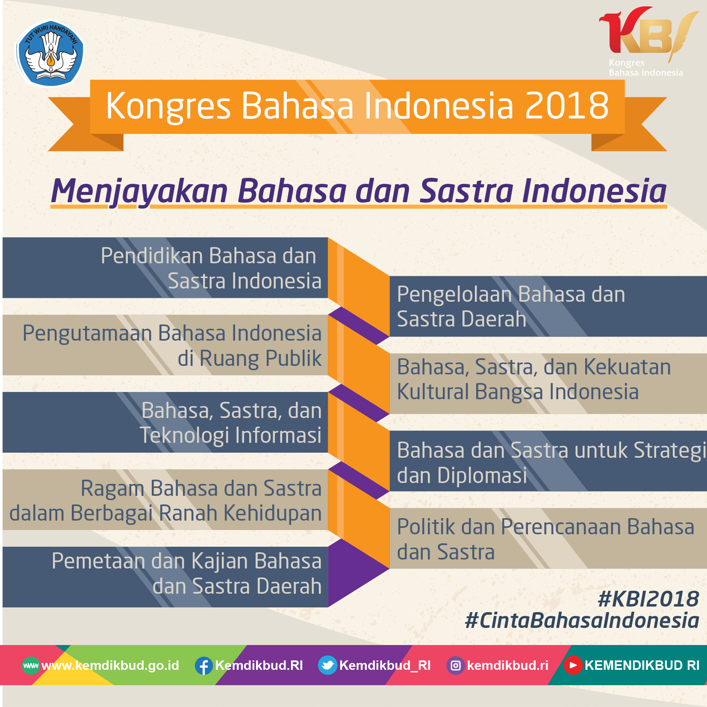

Bahasa Indonesia Perekat Kebangsaan Wakil Presiden (Wapres) Republik Indonesia, Jusuf Kalla, didampingi Menteri Pendidikan dan Kebudayaan (Mendikbud) Muhadjir Effendy, membuka secara resmi penyelenggaraan Kongres Bahasa Indonesia (KBI) XI, di Istana Wakil Presiden, Jakarta, Senin (29/10/2018). KBI yang berlangsung pada tanggal 28-31 Oktober 2018, mengangkat tema “Menjayakan Bahasa dan Sastra Indonesia”. Wapres mengajak seluruh masyarakat untuk bangga menggunakan bahasa Indonesia. “Kita bersyukur bahwa bangsa kita yang besar ini bahasa resminya hanya satu yakni bahasa Indonesia,” dikatakan Wapres Jusuf Kalla. Mendikbud menyampaikan bahwa dengan Kongres Bahasa Indonesia diharapkan dapat meningkatkan kedudukan bahasa Indonesia di dunia Internasional. Selain itu, juga dapat memperkuat tenun kebangsaan, mengidentifikasi mutu pengembangan, pembinaan, dan pelindungan bahasa dan sastra. Serta menghasilkan rumusan atau rekomendasi yang dapat dijadikan arah kebijakan nasional maupun internasional kebahasaan dan kesusastraan. “Kongres ini diikuti 1.031 peserta, termasuk peserta asing yang datang dari 12 negara sahabat. Kehadiran peserta asing juga sebagai representasi program internasionalisasi bahasa Indonesia ke manca negara yang sedang berjalan,” tutur Mendikbud. Kongres Bahasa Indonesia diselenggarakan satu kali dalam lima tahun. Tahun ini menghadirkan 27 orang pembicara kunci, serta 72 pemakalah seleksi yang berasal dari dalam dan luar negeri. Peserta kongres berjumlah 1.031 orang, terdiri atas para pemangku kepentingan, seperti pejabat publik, akademisi, budayawan, tokoh pegiat, pakar, guru, praktisi/pemerhati bahasa dan sastra Indonesia serta daerah, serta para tamu undangan. Pembicara kunci yang akan berbicara pada hari pertama kongres adalah Sastrawan Ahmad Tohari dengan bahasan “Ragam Bahasa dan Sastra dalam Berbagai Ranah Kehidupan”, dilanjutkan dengan gelar wicara yang menghadirkan Wakil Ketua Komisi X DPR RI, Sutan Adil Hendra dengan bahasan “Bahasa dan Sastra untuk Strategi dan Diplomasi” dan wakil dari Kementerian Dalam Negeri dengan bahasan “Pengutamaan Bahasa Indonesia di Ruang Publik”. Ada sembilan subtema yang dikembangkan dari tema besar itu, yaitu (1) Pendidikan Bahasa dan Sastra Indonesia, (2) Pengutamaan Bahasa Indonesia di Ruang Publik, (3) Bahasa, Sastra, dan Teknologi Informasi, (4) Ragam Bahasa dan Sastra dalam Berbagai Ranah Kehidupan, (5) Pemetaan dan Kajian Bahasa dan Sastra Daerah, (6) Pengelolaan Bahasa dan Sastra Daerah, (7) Bahasa, Sastra, dan Kekuatan Kultural Bangsa Indonesia, (8) Bahasa dan Sastra untuk Strategi dan Diplomasi, dan (9) Politik dan Perencanaan Bahasa dan Sastra. Pengutamaan Bahasa Indonesia di Ruang Publik Bahasa Indonesia merupakan bahasa keempat yang paling banyak dipakai di dunia. Menurut Wapres, salah satu yang menjadikannya lebih mudah diterima oleh masyarakat dunia adalah penggunaan huruf latin. Kendati demikian, Wapres berharap agar kosa kata bahasa Indonesia dapat terus dikembangkan dengan mengikuti perkembangan zaman. “Mudah-mudahan Kongres Bahasa Indonesia ini dapat memberikan kemajuan dan pencerahan kepada masyarakat tentang bagaimana menggunakan bahasa Indonesia baku tetapi tetap moderen dan mengikuti perkembangan zamannya,” pesannya. Peran dan fungsi bahasa Indonesia telah dituangkan dalam Undang-Undang Nomor 24 Tahun 2009 tentang Bendera, Bahasa, dan Lambang Negara, serta Lagu Kebangsaan. Keberagaman bahasa di Indonesia perlu dikelola untuk kebutuhan pembangunan sosial, politik, dan ekonomi melalui pendidikan. Mendikbud berpesan, agar keberadaan bahasa asing di ruang publik perlu ditertibkan atau disesuaikan. Sesuai Undang-Undang, penggunaan bahasa asing dan bahasa daerah di ruang publik diperbolehkan. Yang perlu diperhatikan, menurut Mendikbud, adalah kesesuaian dengan kondisi dan ranah yang ada, yaitu tetap mengutamakan bahasa Indonesia sebagai bahasa negara karena ruang publik merupakan representasi jati diri bangsa Indonesia yang harus dihormati keberadaannya. “Ruang publik adalah representasi kehadiran negara melalui bahasa negara. Dan bahasa Indonesia harus menjadi tuan rumah di negaranya sendiri,” ujar Mendikbud. Dan bahasa daerah, menurut Mendikbud, harus mampu membentuk generasi muda Indonesia yang sadar akan kebesaran tradisi dan budayanya. Sementara itu, bahasa asing harus mampu menyiapkan generasi muda Indonesia agar mampu bersaing di dunia internasional. “Mari kita utamakan bahasa Indonesia, lestarikan bahasa daerah, dan kuasai bahasa asing,” pesan Mendikbud. Penghargaan Pegiat Bahasa dan Sastra Dalam rangka penyelenggaraan Kongres Bahasa Indonesia (KBI) ke-XI, Mendikbud Muhadjir Effendy, memberikan penghargaan kepada 13 orang pegiat bahasa Indonesia dan tiga provinsi penerima penghargaan Adibahasa. Tiga provinsi penerima penghargaan Adibahasa tersebut adalah Provinsi Jawa Tengah, Provinsi Jambi, dan Provinsi Sulawesi Barat, di Jakarta, Minggu (28/10). Selain penghargaan kepada tiga provinsi tersebut, diberikan juga penghargaan kepada 13 orang pegiat bahasa, terdiri atas tiga kategori, yakni kategori Sastra diberikan kepada Rida K. Liamsi (kumpulan puisi); Eka Kurniawan (kumpulan cerpen); Martin Suryajaya (novel); Ziggy Zezsyazeoviennazabriezkie (novel), Akhudiat (naskah drama), Hasan Aspahani (esai sastra). Selanjutnya penerima penghargaan pada kategori Tokoh Kebahasaan dan Kesastraan diberikan kepada Arif Sulistiono (tokoh kepemudaan); I Komang Warsa (tokoh pendidik/tenaga kependidikan); Nursida Syam (pegiat literasi), dan; Felicia N. Utorodewo (pegiat diplomasi kebahasaan di kawasan ASEAN). Adapun untuk kategori Duta Bahasa Tingkat Nasional 2018 diberikan kepada Agatha Lydia Natania dan Nursidik (Terbaik I); Hilma Ramadina dan Faisal Meinaldy (Terbaik II), dan; Ainna Khairunnisa dan Almuarrif (Terbaik III).